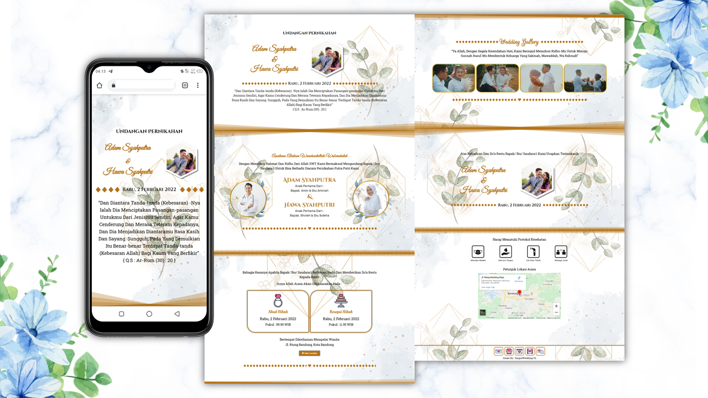
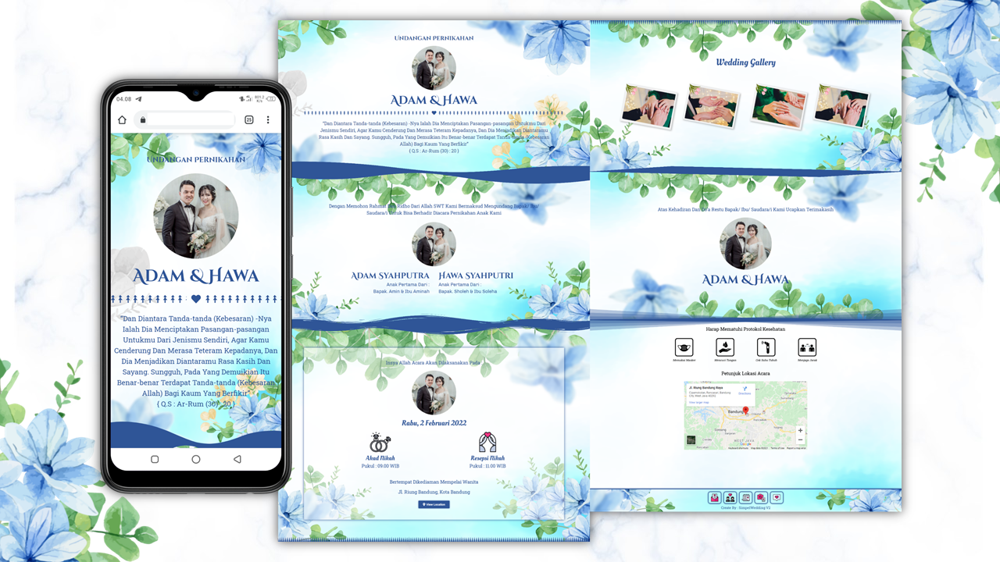
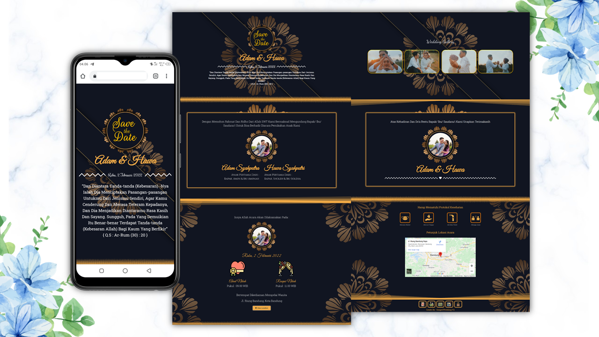
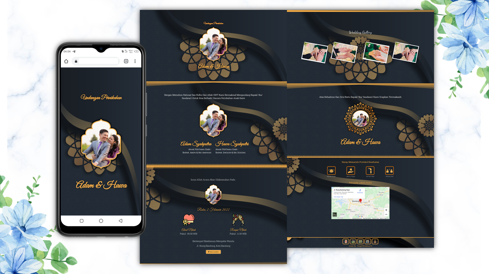

Platform Undangan Digital #1 di Indonesia
Buat Undangan Digital Impian
Buat Undangan Digital Impian
dalam Hitungan Menit
Hemat waktu, biaya, dan lebih ramah lingkungan.




Template Undangan (Mobile View)